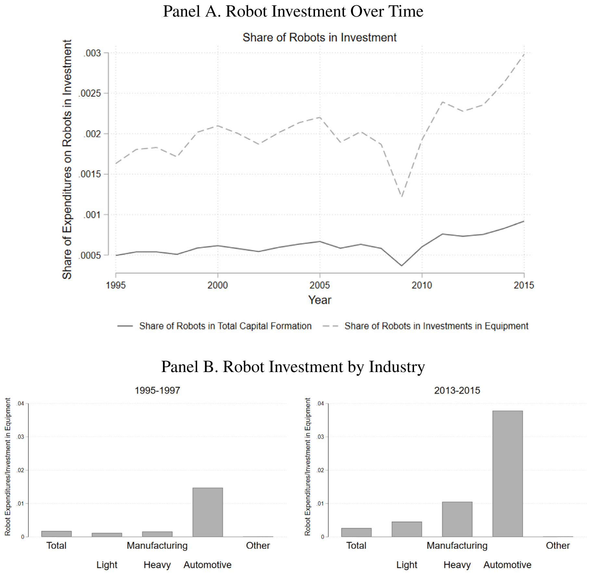
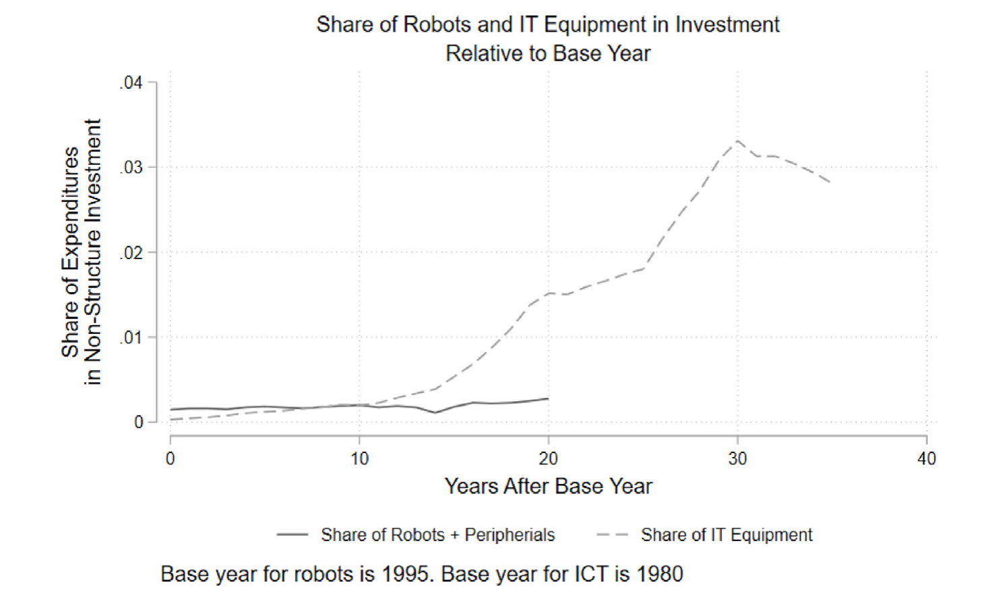
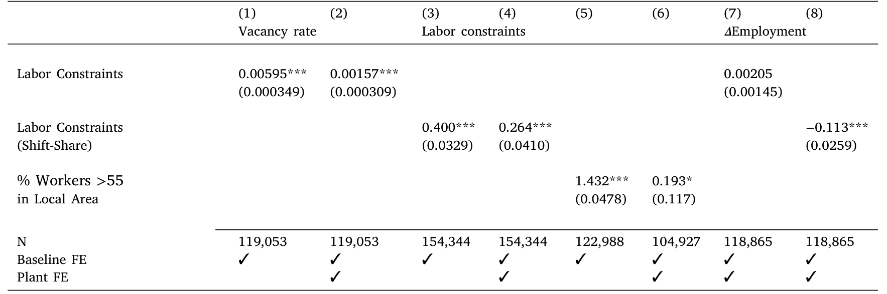
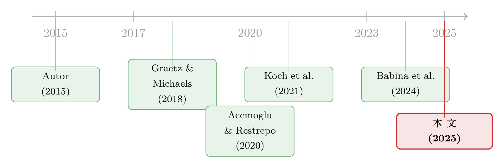

机器人去哪儿了？——一场被高估的「第四次工业革命」
本文读的是 Benmelech & Zator (2025, Journal of Financial Economics)：当所有人都在担心工业机器人会掀起一场「替代革命」、让大批工人失业时，两位作者用跨国数据和德国行政数据把账一笔一笔算了出来——机器人在企业投资里小到几乎可以忽略（不到设备总支出的 0.3%），它的增长也远没有当年 IT 那样爆炸；更反直觉的是，企业恰恰是在「招不到人」的时候才去买机器人，买完之后反而增加了雇佣。所谓的大规模失业，并没有在数据里出现。
1 引言：一个喊了很多年的「狼来了」
如果你这几年读过任何一份关于「未来工作」的报告，大概都见过这样的论断：我们正站在第四次工业革命的门口，工业机器人和人工智能会以前所未有的速度替代人类，制造业工人将成片地被机器赶出工厂。世界经济论坛（WEF, 2018）把它写进了《未来的工作》；学界这边，Acemoglu (2017) 干脆称机器人是「替代型技术（replacing technology）的完美案例」，Acemoglu & Restrepo (2020) 更是用美国地方劳动力市场的数据，估出每千名工人多一台机器人，就业率和工资都会显著下降。再加上一个唬人的数字——2015 到 2022 年间，全球机器人使用量的年复合增长率高达 12%——结论似乎呼之欲出：机器人来了，而且来势汹汹。
这是一个非常有张力的故事。可问题是，故事讲了这么多年，我们却很少回头问一句最朴素的问题：
如果机器人真的这么重要，它在企业的账本上，到底占多大一块？
这正是 Benmelech 和 Zator 这篇论文的切入口。它的口吻几乎是「反潮流」的——别急着谈机器人将如何重塑世界，先看看它现在到底有多大。而当他们真的把这个量级算清楚之后，整个叙事就开始松动了。
这篇文章的妙处在于：它不是去证伪「机器人会替代工人」这个机制，而是去测量这个机制的规模。机制可以是真的，但如果它作用的盘子小到 0.3%，那么它对宏观就业、对企业资产负债表的整体影响，就注定有限。这是一种典型的「机制 vs. 量级」的思路。
2 机器人到底有多「小」
要回答「机器人占多大一块」，第一步是把数据拼起来。作者用了两套互补的口径：
跨国口径。 把国际机器人联合会（International Federation of Robotics, IFR）的机器人安装数据，和 Amadeus 的企业财务数据、EU KLEMS 的资本形成数据合并起来。IFR 的数据来自机器人制造商上报的销量，覆盖全球 90% 以上的市场，按「国家—行业—年份」记录每年新装机器人的台数，并据此推算存量。作者最终用到了 9 个发达国家、14 个两位数行业、约 55,000 家来自 23 个欧洲国家的「大型」「超大型」制造业企业，样本期主要落在 2008–2016 年。
把这些拼起来之后，量级一目了然。先看一个最直观的数字：在制造业里，机器人占资本开支（CapEx）的比重不到 2%；放到整个经济里，这个比重只有约 0.3%。换算成人均，机器人相关的年支出大约只有每名工人 $40（这还把外围设备算进去了），如果只算机器人本体，更是低到约 $11。
这个数字小到什么程度？论文给了一个杀伤力极强的对照——同样是每名工人每年的支出：
- 机器人：约
$11 - ICT（信息通信技术）设备：
$848 - 软件与数据库：
$1722
也就是说，企业花在软件上的钱，是花在机器人上的一百多倍。再看机器人密度：在最自动化的汽车制造业，一个典型年份每千名工人新装 6.11 台机器人；可一旦放到全经济，这个数字就跌到 0.24。机器人不是「无处不在」，而是高度集中在极少数行业（主要就是汽车制造），这一点几十年来几乎没变。

图 3：机器人在企业总投资中的占比。Panel A 为时间趋势，Panel B 为分行业（汽车制造高度集中）。
如图 3 所示，无论怎么切，机器人在总投资里都只是薄薄的一层。这就是这篇论文的第一记重拳：机器人不仅在 Brynjolfsson et al. (2019) 说的「总量生产率统计」里找不到踪影，在企业的资本开支里同样近乎隐形。
3 它会像当年的 IT 那样爆发吗？
读到这里，一个聪明的读者一定会反驳：现在小，不代表将来小啊。任何颠覆性技术在早期都是不起眼的——也许机器人正处在爆发前夜呢？
这是个公平的质疑，而作者也正面接住了它。他们的办法是做一次历史类比：把今天的机器人，和上世纪七八十年代的 IT 设备放在同一根时间轴上对齐——以各自的「基年」为起点，看此后投资占比是怎么走的。
结果很有意思。机器人在 1995 年占企业投资的比重，其实比 IT 设备在 1980 年时还要高。换句话说，起跑线上机器人并不落后。可接下来呢？IT 在 1980 年代末到 1990 年代初迎来了一轮爆炸式增长，到 2000 年已经占到企业总资本开支的 1.5% 以上，而且还在加速；与此同时，软件、数据库这些互补性投资也被它一并带火。反观机器人：到 2015 年——也就是它「基年」之后整整 20 年——投资规模仍然比 IT 在 2000 年时低了一个数量级，而且看不到任何要起飞的迹象。

图 4：机器人（基年 1995）与 IT 设备（基年 1980）相对各自基年的投资占比——起点相近，但 IT 一路向上、机器人始终贴地。
图 4 把这种「同期对齐」的对比画得很清楚：两条曲线起点相近，但 IT 一路向上挣脱，机器人却始终贴着地面爬行。
那么，最近那个吓人的 12% 年增长率又是怎么回事？这是全文我最欣赏的一处细节。作者把增长拆开来看，发现近年的机器人增量主要来自中国等发展中国家的制造业扩张，而不是发达国家在更广泛的行业里用起了机器人。在西方，机器人增长一直是「稳定而温和」的。这个区分至关重要：它意味着最近的提速并不代表技术前沿在外推（机器人开始进入此前从未自动化的新场景），而只是同一类机器人、在同样的几个行业里、铺向了新的国家。技术的边界没有扩张，只是地理版图在扩张。
这正是很多「机器人爆发论」在数据上的盲点：把「机器人卖得更多了」直接等同于「机器人在变得更通用、更不可阻挡」。但卖得多，可能只是因为中国在建更多汽车厂，而不是因为机器人学会了干以前干不了的活。
4 反转：企业为什么会去买机器人？
跨国数据把「机器人很小」这件事说清楚了，但它有个天生的短板——数据粗、识别弱，没法可信地回答那个最要紧的问题：机器人和就业，到底是什么关系？ 于是论文在这里来了一次设定上的切换，转向德国的行政微观数据。
作者用的是德国就业研究所（IAB）的两套数据：一套是 IAB 企业面板（IAB Establishment Panel, IAB-EP），每年访谈约 16,000 家企业，问卷长达 35–55 分钟、八成以上面对面完成，应答率高达 60%–70%，里面有企业自报的招工困难、自动化与数字化采纳、机器人台数（机器人计数只在 2019 年那一波问卷里）；另一套是企业历史面板（Establishment History Panel, BHP），基于社保记录、有精细的雇佣数据。两套数据不能自由合并，所以作者把在 IAB-EP 里算好的「技术采纳」「劳动力稀缺」的汇总指标，merge 进 BHP 去做就业分析。
而真正关键的一步，是作者构造了一组劳动力稀缺（labor scarcity）的度量——把企业问卷里自报的招工与用工困难，和它实际的招聘结果结合起来。然后做一件很朴素的事：把企业的自动化投资，回归到这些劳动力稀缺指标上。
结果出现了第一个反转：越是招不到合适工人的企业，越倾向于采纳自动化。 这个相关性相当稳健——换成地区层面的劳动力稀缺、或只看出口型企业（以缓解「本地需求」这种内生性顾虑），结论都站得住。

表 5：劳动力稀缺度量的验证与影响——劳动力约束（含 shift-share 工具变量）显著正向预测空缺率与自动化，列 (1)–(8) 涵盖空缺率、劳动力约束与就业变化。
如表 5 所示，稀缺与自动化投资之间显著为正。这个发现的含义并不小：它说明机器人在德国更像是给招不到人的企业「补位」的工具，尤其是去填那些缺口最大的、合格的蓝领岗位，而不是把现有工人一脚踢开的「替代者」。顺着这个逻辑，即便机器人最终伴随着更低的雇佣水平，真正「丢掉饭碗」的在职工人也很有限——因为机器人补的，本就是空着的位子。
这一步把整篇论文的故事推向了它的核心：机器人不是工人的敌人，更像是劳动力短缺的解药。（关于「企业投资如何被劳动力等约束塑造」这一更大的主题，也可参见《投资于「错配」：那些看起来在乱花钱的公司，其实在赌一次跳跃》。）
5 那……就业到底受没受影响？
当然，光看采纳机器人的企业自己增不增员是不够的。也许这些企业的扩张，恰恰是踩着别的、没采纳机器人的企业的就业下滑实现的呢？直接采纳者的「直接替代效应」很小，不代表整个行业、整个地区没有「间接替代效应」。
这正是作者最后一块拼图，也是他们方法上相对前人的一点推进。既有文献（如 Acemoglu & Restrepo, 2020）大多只利用行业层面的机器人强度差异；而这篇论文用双重差分（difference-in-differences, DiD），同时利用了行业层面的机器人化强度和地区层面的技术采纳水平这两重变异，去比较「高采纳」与「低采纳」的行业和地区。
结果是教科书式的「有，但不大」：
- 机器人化确实带来了负向的就业效应，但量级温和。粗算下来，在
2005–2015这十年里，高暴露的行业与地区，就业增速大约只慢了~0.3%（整个区间累计），换算成年度约~0.03%。 - 与此同时，作者看到一些劳动力市场集中度上升的迹象——就业的小幅下滑，似乎伴随着采纳企业在扩张、而非采纳企业在收缩，是一种「此消彼长」。
0.03% 每年是个什么概念？它几乎淹没在劳动力市场正常的噪声里。所以结论并非「机器人对就业毫无影响」，而是：影响的方向可能为负，但规模小到不足以支撑「大规模失业」这种叙事。 把第 4 节和第 5 节合起来读，逻辑就闭环了——企业因为缺人而买机器人，买完自己还增员，行业层面的净就业损失也只有零点零几个百分点。狼，并没有真的来。
6 为什么机器人「不够格」当通用技术？
到这里，论文其实已经可以收尾了。但作者多走了一步，去回答一个更深的「为什么」——为什么机器人的影响，注定不会像蒸汽机、电力那样翻天覆地？
他们借用了通用目的技术（general purpose technology, GPT）的框架（Jovanovic & Rousseau, 2005）。一项技术要成为真正重塑经济的 GPT，通常得满足几个条件：足够普及、能跨越广泛的行业被使用、并且能催生大量互补性创新。拿这把尺子去量机器人，它三条几乎都不达标——不普及、被锁死在汽车等少数行业、互补创新寥寥。反过来，数据处理、云计算、生成式 AI、网络通信这些数字技术，普及度更高、迭代更快、也更能长出互补创新，因而更可能带来量级更大的经济后果。作者并没有说「技术变革无关紧要」，他们说的是更精确的一句话：别把「机器人」误当成「技术变革」的同义词——机器人只是技术大家庭里一个偏小、偏窄的成员。
这一节也顺手回应了一桩学术公案：为什么 Graetz & Michaels (2018) 等研究能在「每台机器人」的口径上估出可观的生产率/就业效应，却和「机器人对整个经济影响很小」并不矛盾？因为人均效应大，不等于总量效应大——当机器人本身的盘子只有 0.3%，再大的单位效应，乘上一个极小的基数，加总起来也还是小。这是理解全文的关键。
7 文献脉络
把这篇论文放回它所在的研究谱系里，会看得更清楚。
最早，关于「技术与就业」的讨论分成两派。一派是 Autor (2015) 代表的「增强型技术（enabling technology）」观——技术放大工人的生产率，最终带来更高工资和更多就业；另一派则是「替代型技术」观，担心机器把人挤出岗位。机器人，恰好被推到了这场争论的风口浪尖。
接着，Graetz & Michaels (2018) 用 IFR 数据首次系统地量化了机器人对生产率的提升，把这套数据引入了经济学；Acemoglu & Restrepo (2020) 紧随其后，用美国地方劳动力市场的变异，估出机器人对就业和工资的负向冲击——这成了「机器人威胁论」最有分量的实证支柱。
然后，一批更细腻的研究开始给这个故事「打补丁」：Dauth et al. (2021)、Humlum (2019) 指出机器人会替代生产岗位、但其他岗位的就业可能上升；Koch, Manuylov & Smolka (2021) 用企业层面数据发现机器人采纳者反而更高产、雇得更多——这恰恰和本文在德国看到的「采纳者增员」彼此呼应。Aghion et al. (2022) 则在法国数据里看到现代制造资本对劳动需求的正向作用。

但真正关键的一步，是没人停下来认真测量过「机器人在企业投资里到底占多大」。Benmelech & Zator (2025) 站到的，正是这个位置：它不去和某一派站队，而是先把量级钉死，再用德国数据把「劳动力稀缺 → 采纳机器人 → 增员」这条机制讲完整。它也接续了 Babina et al. (2024) 对「企业层面技术投资」的关注——只不过把镜头从 AI 转向了机器人，并得出一个更冷静的结论。
评论与延伸（Q&A + 研究方向）
(a) 几个可能的疑问
Q：说机器人「小」，是不是因为 IFR 只数了工业机器人，漏掉了 AGV、协作机器人、AI 这些新形态？
是一个真实的口径局限。IFR 沿用 ISO 定义——「可自动控制、可重新编程、多用途、三轴及以上」的机械臂，确实把单一用途设备（电梯、起重机）和很多新形态排除在外。但作者的论证恰恰建立在这个窄定义上：他们想说的不是「所有自动化都很小」，而是「被舆论捧为劳动力杀手的那一类工业机器人，很小」。至于 AI、云计算这些，作者明说了它们盘子更大、潜在影响更深——这反而是论文的一个主动让步，而非疏漏。
Q：跨国那部分用的是机器人「销量 × 估算均价」，价格估得准吗？
这是软肋之一，作者也坦承 IFR 不像报销量那样规整地报价格。但他们做了两手准备：一是用「台数 × 均价」直接算，二是用回归方法去估机器人在企业资本开支中的份额，两条路给出的量级是同一个数量级。结论靠的是数量级（
0.3%还是30%），而不是小数点后的精度，所以对价格误差并不敏感。
Q：德国的劳动力市场以刚性著称，工资调不动、靠「招不到人」来体现稀缺。换到美国，结论还成立吗？
外部效度确实要打个问号。作者自己在脚注里点明：德国因为行业级、企业级工资协议等刚性，劳动力稀缺更多表现为「找不到合适工人」而非「工资上涨」。但他们也论证，无论稀缺反映在价格还是数量上，经济直觉是一样的——招工难可以理解为高搜寻成本、即高劳动力成本。机制大概率可迁移，但具体量级在更灵活的劳动力市场里会不会不同，是个开放问题。
Q：那个 0.03%/年的就业效应，是不是因为 DiD 的对照组（低采纳行业）本身在增长，把效应「稀释」了？
作者很诚实地提示了这一点：DiD 估出来的「负效应」可能部分反映的是非采纳行业的增长，而非采纳行业的绝对萎缩。这其实和他们的整体叙事一致——是「采纳者扩张、非采纳者相对落后」的此消彼长，伴随劳动力市场集中度上升，而不是大面积裁员。把它读成「净相对效应小」，比读成「绝对就业崩塌」更稳妥。
Q：既然企业是「缺人才买机器人、买完还增员」，那机器人到底替代了谁？
这里要区分「岗位」和「人」。机器人替代的是空缺的、招不满的岗位（尤其是合格蓝领），而不是在职的工人。所以即便企业的雇佣结构里机器干了一部分活，真正「失去工作」的在职者也很少——这正是作者反复强调「失业的负面后果有限」的原因。替代发生在「本来就该招而没招到」的边际上。
Q：这篇文章是不是在说「技术变革被夸大了」？
恰恰相反。作者特意撇清：他们说的是机器人这一类技术影响有限，而不是技术整体。他们明确指出数据处理、云计算、生成式 AI 这些数字技术更普及、迭代更快、更能催生互补创新，因而经济后果可能大得多。论文的靶子是「把机器人当成技术革命的全部」这种以偏概全，而不是技术进步本身。
(b) 几个可能的研究问题与提案
1. 劳动力稀缺、自动化与企业信用风险。 【经济故事】如果企业是在「招不到人」时被迫上自动化，那么劳动力稀缺其实是一种成本冲击；它会不会通过挤占现金流、抬高经营杠杆，传导到企业的融资成本和债券利差上？「缺人 → 资本替代 → 信用风险变化」是一条没被走通的链条。 【可行性】中。需要把行业/地区层面的劳动力稀缺指标，匹配到公司债二级市场利差（如 TRACE）或评级数据上；识别可借用本文的行业×地区双重变异做 DiD。难点是把德国式的稀缺度量迁移到美国信用市场，需另找稀缺代理（如职位空缺时长、Burning Glass 招聘数据）。
2. 外资持有人会推动还是抑制被投企业的自动化？ 【经济故事】外资机构投资者往往更看重短期利润率与成本控制，可能更偏好「用资本替代劳动」；也可能因为治理改善而让企业更敢做长期技术投资。方向先验不清，正适合实证。 【可行性】中。需要企业层面的外资持股（如 FactSet/Orbis 的所有权数据）叠加 IFR 行业机器人强度或企业自动化披露；识别可用 MSCI 指数纳入等准自然实验冲击外资持股。挑战在于自动化的企业层面度量在上市公司里较稀疏。
3. 「机器人的盘子很小」这件事，债券市场 price 了没有？ 【经济故事】本文的核心是「机器人影响被高估」。如果市场也曾高估，那在自动化叙事最热的年份，高机器人暴露行业的企业，其股价/债券估值里是否含了一个最终未兑现的「自动化溢价」？这是一个关于「叙事定价」的检验。 【可行性】中偏低。需要构造行业自动化暴露，与资产价格/利差在叙事周期（如 2016–2019 自动化话题高峰）上的关系，并控制基本面。难点是把「叙事强度」量化（可借媒体文本指数），以及分离溢价与真实基本面变化。
4. 用本文的 IT vs. 机器人「同期对齐」方法，去给生成式 AI 估一条早期轨迹。 【经济故事】作者最有力的工具之一，是把不同技术按「基年」对齐、比较早期投资占比的斜率。把同样的方法用到 AI 投资上，能不能在 AI 还很早期时，就判断它更像「会爆发的 IT」还是「爬行的机器人」？ 【可行性】高。数据上 AI 相关资本开支、云支出、招聘强度（Babina et al., 2024 已有企业层面 AI 度量）都在快速变得可得；识别就是描述性的「轨迹对齐」，方法本文已示范。是一个 doable 且时效性强的延伸。
5. 劳动力稀缺驱动的自动化，会不会反过来加剧地区间的就业极化？ 【经济故事】本文已看到「就业小幅下滑 + 市场集中度上升」的苗头。若采纳企业集中在特定地区，自动化可能放大地区间的就业与工资分化——这对地方公共财政、家庭信用都有外溢含义。 【可行性】中。需要地区层面的自动化暴露 × 地方就业/工资/家庭信贷（如信用局数据）面板，做事件研究或 DiD。识别难点在于自动化采纳的地区选择是内生的，需借助行业组合 shift-share 工具变量。
我的判断
这篇论文最大的贡献，是给一个被舆论烧得过热的话题泼了一盆用数据冰镇过的冷水——而且泼得有理有据。它的方法论亮点不在某个花哨的识别，而在于一种克制的提问方式：先问「有多大」，再问「为什么是这样」。把「机器人占企业投资 0.3%」「机器人不像 IT 那样爆发」「企业缺人才买机器人」「就业净效应 0.03%/年」这四块拼到一起，它讲出了一个比「机器人替代论」更可信、也更有质感的故事。德国部分用劳动力稀缺把因果链条补完整、并同时利用行业与地区双重变异做 DiD，是相对前人扎实的一步。
要说对识别的担忧，我有三点。其一，跨国部分的「机器人份额」高度依赖 IFR 的均价估算和回归外推，虽然两种口径数量级一致，但这部分更接近「描述性事实」而非干净的因果识别。其二，德国 DiD 的 0.03% 本身就被作者提示可能混入了非采纳行业的增长，平行趋势的可信度、以及把这个「相对效应」解读成「机器人的因果就业效应」，都还留有空间。其三，外部效度——德国刚性劳动力市场里「稀缺=招不到人」的逻辑，未必能平移到工资更灵活的美国，而美国恰恰是「机器人替代论」最响亮的地方。
后续我最想看到的，是把这套「先量级、后机制」的纪律用到生成式 AI 上——作者自己也反复暗示 AI 才是那个盘子更大的技术。如果有人能在 AI 还年轻的时候，就用本文这条「同期对齐」的轨迹方法判断它究竟更像 IT 还是更像机器人，那将是对这篇论文最好的致敬，也是对下一场「狼来了」最有用的预警。
参考文献
- Acemoglu, D. (2017). Race Against the Machine. Technical Report, Toulouse Network for Information Technology.
- Acemoglu, D., & Restrepo, P. (2020). Robots and jobs: Evidence from US labor markets. Journal of Political Economy 128(6), 2188–2244.
- Aghion, P., Antonin, C., Bunel, S., & Jaravel, X. (2022). Modern manufacturing capital, labor demand, and product market dynamics: Evidence from France. Working Paper.
- Autor, D. H. (2015). Why are there still so many jobs? The history and future of workplace automation. Journal of Economic Perspectives 29(3), 3–30.
- Babina, T., Fedyk, A., He, A. X., & Hodson, J. (2024). Artificial intelligence, firm growth, and product innovation. Journal of Financial Economics 151, 1037–1045.
- Benmelech, E., & Zator, M. (2025). Robots and firm investment. Journal of Financial Economics 174, 104183.
- Brynjolfsson, E., Rock, D., & Syverson, C. (2019). Artificial intelligence and the modern productivity paradox: A clash of expectations and statistics. In The Economics of Artificial Intelligence: An Agenda. University of Chicago Press.
- Dauth, W., Findeisen, S., Suedekum, J., & Woessner, N. (2021). The adjustment of labor markets to robots. Journal of the European Economic Association.
- Graetz, G., & Michaels, G. (2018). Robots at work. Review of Economics and Statistics 100(5), 753–768.
- Humlum, A. (2019). Robot Adoption and Labor Market Dynamics. Princeton University.
- Jovanovic, B., & Rousseau, P. L. (2005). General purpose technologies. In Handbook of Economic Growth, Vol. 1, Elsevier, pp. 1181–1224.
- Koch, M., Manuylov, I., & Smolka, M. (2021). Robots and firms. Economic Journal 131(638), 2553–2584.